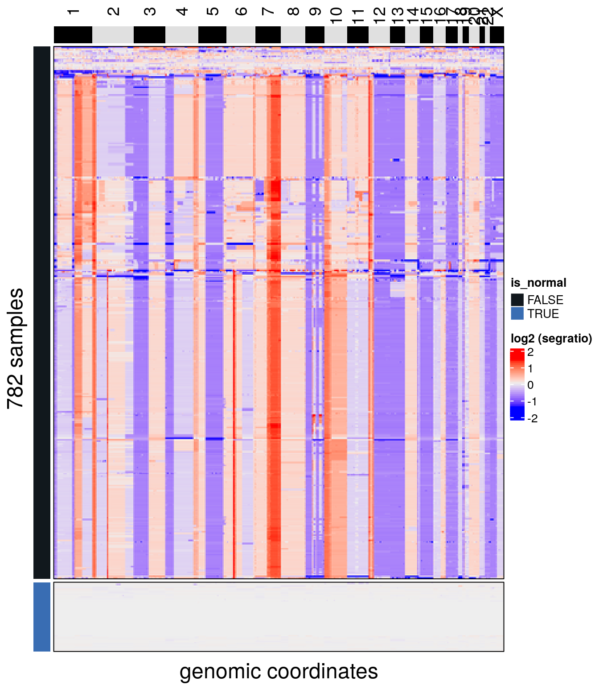
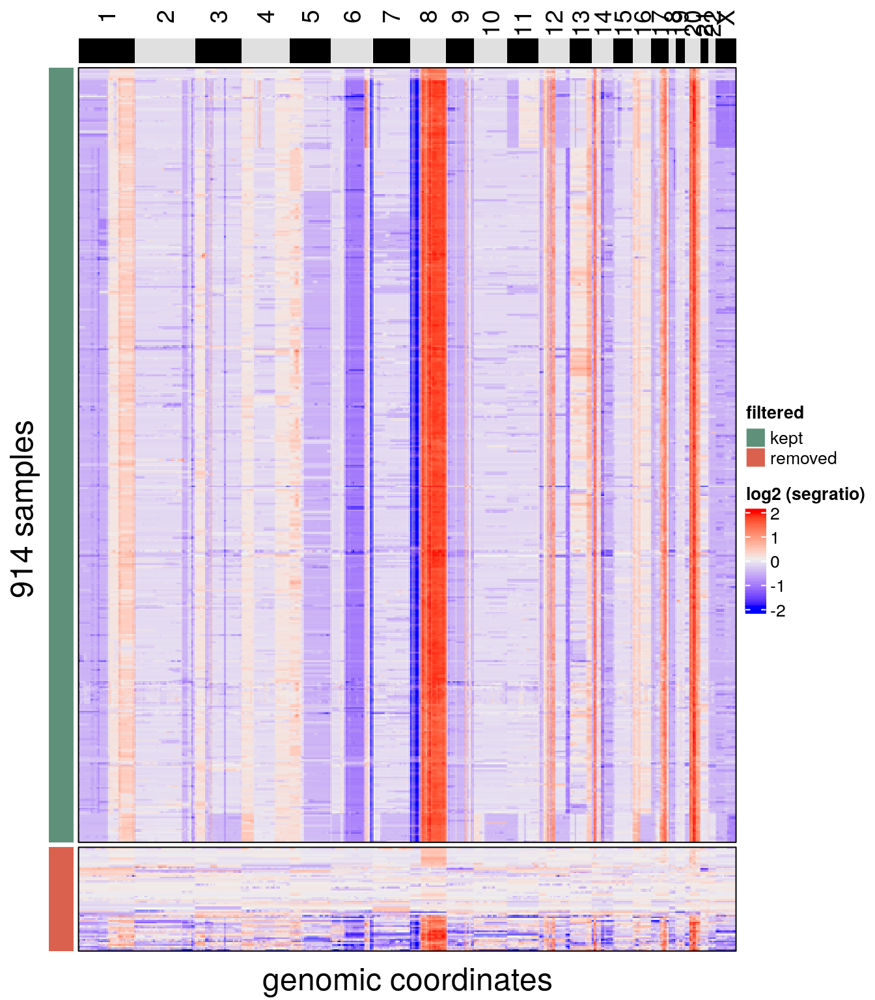

5 QC module
CopyKit Quality Control Module consists of 3 main functions:
runMetrics()findOutliers()findAneuploidCells().
5.1 runMetrics()
runMetrics() adds basic quality control information to colData.
It returns sample-wise metrics of overdispersion and breakpoint counts.
tumor <- runMetrics(tumor)## Calculating overdispersion.## Counting breakpoints.## Done.The resulting information can be viewed with:
colData(tumor)## DataFrame with 1502 rows and 11 columns
## sample reads_assigned_bins reads_unmapped
## <character> <integer> <integer>
## PMTC6LiverC100DL1S2_S100_L001_R1_001 PMTC6LiverC100DL1S2_.. 362665 30250
## PMTC6LiverC100DL1S6_S484_L002_R1_001 PMTC6LiverC100DL1S6_.. 130570 22260
## PMTC6LiverC100DL4L5S1_S868_L003_R1_001 PMTC6LiverC100DL4L5S.. 536017 30942
## PMTC6LiverC100DL6L7S3_S1252_L004_R1_001 PMTC6LiverC100DL6L7S.. 467002 28239
## PMTC6LiverC101DL1S2_S101_L001_R1_001 PMTC6LiverC101DL1S2_.. 423654 28756
## ... ... ... ...
## PMTC6LiverC99DL4L5S1_S867_L003_R1_001 PMTC6LiverC99DL4L5S1.. 460498 37945
## PMTC6LiverC99DL6L7S3_S1251_L004_R1_001 PMTC6LiverC99DL6L7S3.. 306486 28090
## PMTC6LiverC9DL1S1_S9_L001_R1_001 PMTC6LiverC9DL1S1_S9.. 274402 38326
## PMTC6LiverC9DL1S5_S393_L002_R1_001 PMTC6LiverC9DL1S5_S3.. 465001 34111
## PMTC6LiverC9DL6L7S1_S1161_L004_R1_001 PMTC6LiverC9DL6L7S1_.. 336559 38814
## reads_duplicates reads_multimapped reads_unassigned reads_ambiguous
## <integer> <integer> <integer> <integer>
## PMTC6LiverC100DL1S2_S100_L001_R1_001 34883 0 75555 90
## PMTC6LiverC100DL1S6_S484_L002_R1_001 12657 0 28651 27
## PMTC6LiverC100DL4L5S1_S868_L003_R1_001 58222 0 110352 103
## PMTC6LiverC100DL6L7S3_S1252_L004_R1_001 53055 0 98560 91
## PMTC6LiverC101DL1S2_S101_L001_R1_001 43008 0 87786 76
## ... ... ... ... ...
## PMTC6LiverC99DL4L5S1_S867_L003_R1_001 54159 0 96735 86
## PMTC6LiverC99DL6L7S3_S1251_L004_R1_001 36534 0 64866 56
## PMTC6LiverC9DL1S1_S9_L001_R1_001 25527 0 59107 54
## PMTC6LiverC9DL1S5_S393_L002_R1_001 48055 0 96126 109
## PMTC6LiverC9DL6L7S1_S1161_L004_R1_001 37898 0 71998 60
## reads_total percentage_duplicates overdispersion breakpoint_count
## <numeric> <numeric> <numeric> <numeric>
## PMTC6LiverC100DL1S2_S100_L001_R1_001 503443 0.069 0.00262992 0
## PMTC6LiverC100DL1S6_S484_L002_R1_001 194165 0.065 0.01564945 0
## PMTC6LiverC100DL4L5S1_S868_L003_R1_001 735636 0.079 0.00302844 0
## PMTC6LiverC100DL6L7S3_S1252_L004_R1_001 646947 0.082 0.00379236 0
## PMTC6LiverC101DL1S2_S101_L001_R1_001 583280 0.074 0.00674672 0
## ... ... ... ... ...
## PMTC6LiverC99DL4L5S1_S867_L003_R1_001 649423 0.083 0.00195059 0
## PMTC6LiverC99DL6L7S3_S1251_L004_R1_001 436032 0.084 0.00362179 0
## PMTC6LiverC9DL1S1_S9_L001_R1_001 397416 0.064 0.00406539 0
## PMTC6LiverC9DL1S5_S393_L002_R1_001 643402 0.075 0.00276767 0
## PMTC6LiverC9DL6L7S1_S1161_L004_R1_001 485329 0.078 0.00231466 05.2 findAneuploidCells()
Datasets may contain euploid cells mixed with the aneuploidy cells.
To detect euploid cells findAneuploidCells() calculates the sample-wise coefficient of variation from the segment ratio means.
The expected coefficient of variation for euploid cells N(0, 0.01) is simulated for x data points, where x is equal to the number of cells within the dataset.
An expectation-maximization algorithm is used to fit a mixture of gaussian distributions to the coefficient of variation from the samples together with the simulated datasets.
The distribution containing the simulated dataset is inferred to be the euploid distribution.
Samples that group with the inferred euploid distribution and present coefficient of variation smaller than 5 standard deviations from the mean euploid distribution are classified as euploid samples.
The threshold can be changed from the automatic detection to a custom threshold with the argument resolution. For example, by setting a threshold = 0.1, findAneuploidCells will mark as euploid all cells with a coefficient of variation less or equal than 0.1.
tumor <- findAneuploidCells(tumor)## number of iterations= 17## Copykit detected 612 that are possibly normal cells using a resolution of: 0.054## Added information to colData(CopyKit).The results from findAneuploidCells() are stored within the colData in the column is_aneuploid.
We can visualize the results with plotHeatmap():
plotHeatmap(tumor, label = 'is_aneuploid', row_split = 'is_aneuploid', n_threads = 40)## Ordering by consensus requires cluster information.## Switching to hclust.## No distance matrix detected in the scCNA object.## Calculating distance matrix with metric: euclidean## Using 40 cores.## Access distance matrix with copykit::distMat()## Done.## Plotting Heatmap.
The object is subsetted in the same way as with any R object, to keep only the aneuploid cells.
tumor <- tumor[,colData(tumor)$is_aneuploid == TRUE]5.3 findOutliers()
findOutliers() annotates low-quality cells according to a defined resolution threshold.
To detect low-quality samples, CopyKit calculates the Pearson correlation matrix of all samples from the segment ratio means. Next, we calculate a sample-wise mean of the correlation between a cell and its k-nearest-neighbors (default = 5). Cells in which the correlation value is lower than the defined threshold are classified as low-quality cells (default = 0.9).
tumor <- findOutliers(tumor)## Calculating correlation matrix.## Marked 101 cells as outliers.## Adding information to metadata. Access with colData(scCNA).## Done.The default correlation cutoff for filtering can be adjusted with the argument ‘resolution.’ For example, setting the resolution = 0.8 will mark all cells with a mean correlation smaller than 0.8 as low-quality cells. Higher resolution values will result in stricter filtering criterias.
Results from findOutliers() are added to colData (column outlier) marking cells that can be removed or kept.
We can check the results with plotHeatmap(). To make visualization easier, rows can also be split according to elements of colData with the argument row_split.
plotHeatmap(tumor, label = 'outlier', row_split = 'outlier', n_threads = 40)## Ordering by consensus requires cluster information.## Switching to hclust.## No distance matrix detected in the scCNA object.## Calculating distance matrix with metric: euclidean## Using 40 cores.## Access distance matrix with copykit::distMat()## Done.## Plotting Heatmap.
We remove the marked noise cells from the object with:
tumor <- tumor[,colData(tumor)$outlier == FALSE]The dataset should be ready to proceed with the analysis.